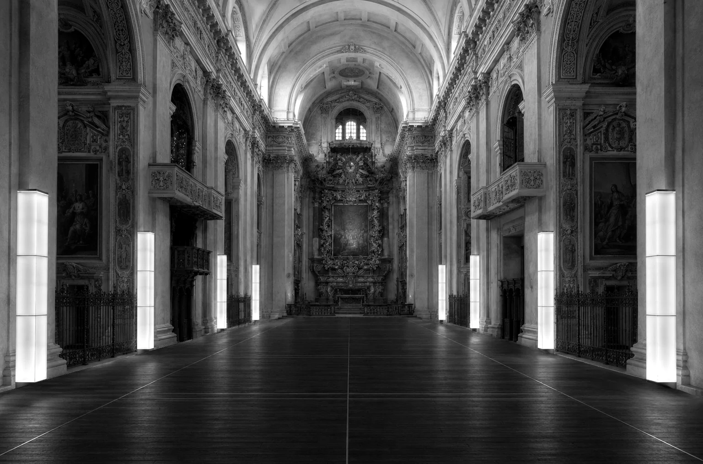

One image. An estimated depth.A different position.
La webcam rileva in tempo reale la posizione del viso per muovere la scena. I fotogrammi sono elaborati solo sul tuo dispositivo: nessuna registrazione, salvataggio o invio a server. Il microfono non viene utilizzato.
Puoi spegnerla in qualsiasi momento. Se non acconsenti, puoi continuare con il mouse.
JavaScript is disabled. The original image is shown.